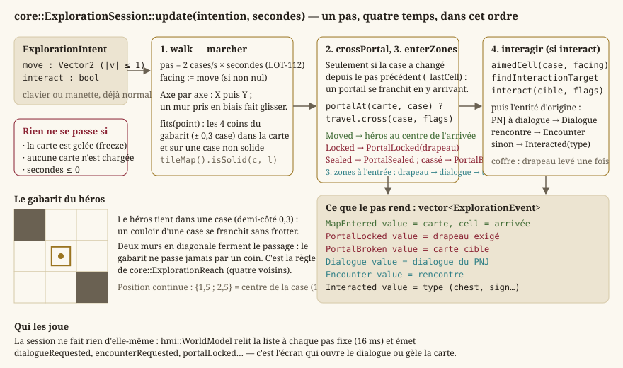
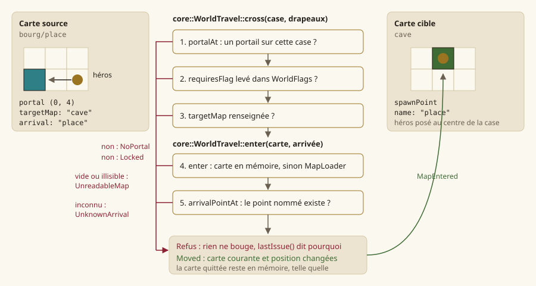
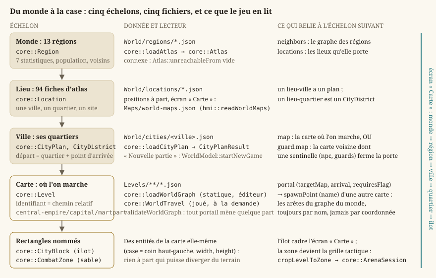
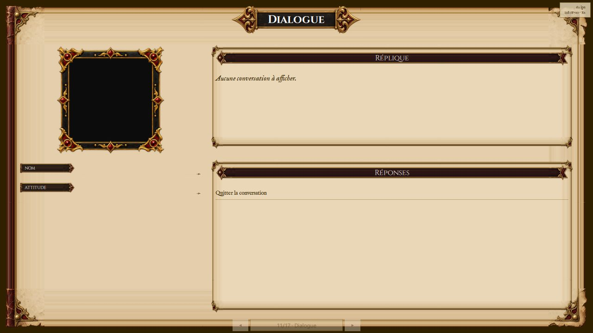
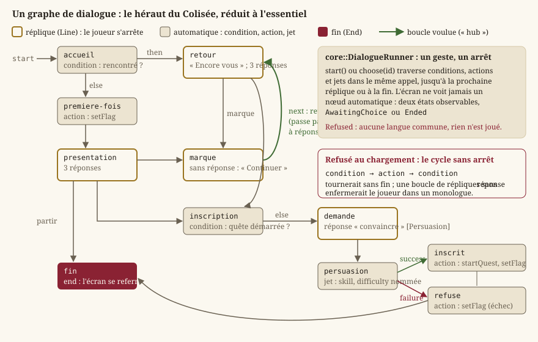
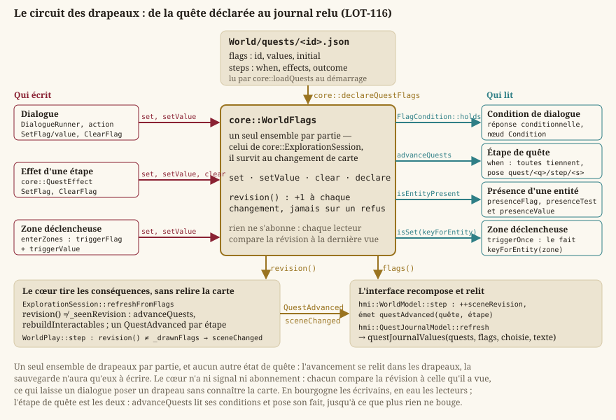

Monde et exploration
Une carte (Niveaux : modèle, couches, entités, chargement) n'est qu'une donnée : elle ne bouge pas. Cette page décrit ce qui la fait vivre — un héros qui marche, parle à ce qu'il regarde, franchit des portails et descend sur le sable — et ce qui relie les cartes entre elles, du monde entier jusqu'à l'îlot d'un quartier. Tout cela vit dans Source/Core/World/, Source/Core/Gameplay/ et Source/Core/Rpg/Dialogue.* : de la simulation pure, sans Qt ni GPU (EX-NFR-004), que l'interface met à l'écran et que les tests jouent sans fenêtre.
Définitions
- Session d'exploration — la moitié « temps réel » du jeu (
EX-VIS-001) : un héros à position continue sur la grille d'une carte, une orientation, la carte courante, les faits acquis de la partie. C'estcore::ExplorationSession, jumelle de la session de combat (core::ArenaSession, Combat tactique) : un lieu et une arène se dessinent par le même code, ils se simulent par deux sessions (décision de l'auteur,LOT-09). - Pas d'exploration — un appel à
core::ExplorationSession::updateavec une intention (direction voulue, touche d'interaction) et une durée. Le pas ne connaît ni pixel ni projection : il marche en cases par seconde, et rend une liste d'événements que l'appelant joue. - Portail et point d'arrivée — deux entités de carte. Le portail nomme une carte cible et un point d'arrivée par son nom, jamais par des coordonnées ; le point d'arrivée est la case nommée où l'on apparaît. Un portail peut exiger un drapeau.
- Graphe du monde — les cartes du dossier des niveaux et les portails qui les relient. Il existe deux fois : statique (
core::WorldGraph, ce que l'éditeur montre et valide) et joué (core::WorldTravel, qui charge les cartes à la demande et déplace le héros). - Atlas, région, lieu — le monde de Tanares tel que le corpus le décrit : treize régions et quatre-vingt-quatorze lieux (
core::Atlas,LOT-37). Une région est un nœud d'un graphe de voisinage ; un lieu est une carte à créer. - Ville, quartier, îlot — une ville jouable nomme ses quartiers (
core::CityPlan,LOT-96) ; chaque quartier a soit la carte où l'on marche, soit la carte voisine où une sentinelle garde sa porte. Un îlot (core::CityBlock) est un rectangle nommé de la carte d'un quartier, que l'écran « Carte » cadre. - Fait de partie — ce qui a eu lieu et ne doit pas avoir lieu deux fois : coffre ouvert, ennemi vaincu, quête démarrée, porte déverrouillée. Un ensemble de clés texte (
core::WorldFlags) qui vit à côté des entités et survit au changement de carte. - Zone de combat — le rectangle nommé d'une carte où l'on se bat, et lui seul (
core::CombatZone,EX-LVL-018) : la session d'arène reçoit une carte réduite à la zone. - Dialogue — un graphe de nœuds sans aucun texte (
core::DialogueGraph) et la machine à états pure qui le joue (core::DialogueRunner,LOT-15).

Qui appelle qui
Côté interface, hmi::WorldModel (un singleton QML) tient la partie : il possède un hmi::WorldPlay, qui possède la session ; toutes les 16 ms, il passe à update l'intention que l'écran a tenue (setMove, interact) et traduit les événements rendus en signaux (dialogueRequested, encounterRequested, portalLocked, portalBroken, portalSealed, mapEntered, questAdvanced). C'est l'écran qui ouvre le dialogue ou le combat sur la carte, et qui gèle la carte pendant ce temps ; le modèle ne décide rien du monde. Le singleton n'est pas un détail : la pile d'écrans détruit la vue de jeu quand un autre écran la recouvre, et une session possédée par l'écran mourrait avec elle — on reviendrait du sable sur une carte neuve, héros à la porte, exactement ce que le LOT-09 interdit. Le détail est dans Écrans, navigation et boucle de jeu ; le dessin de la scène (composeur, caméra qui suit le héros) dans Rendu 2D : de la scène à l'écran.
Note — Les premiers lots avaient posé l'exploration dans un orchestrateur
GameSessionet des modes de jeu (LOT-05: exploration, dialogue, combat, chacun avec son ordre de passes ;LOT-06: le déplacement par balayage continu ;LOT-18: le mode combat qui gèle déplacement, mécanismes et issue). LeLOT-09a remplacé cet orchestrateur par la session pure décrite ici, et la table rase duLOT-102a retiré ce qui en restait. Les règles de ces lots demeurent — la diagonale n'est pas plus rapide, un mur pris en biais fait glisser, le monde est gelé pendant un dialogue — mais elles vivent désormais dansExplorationSessionet dans le gel dehmi::WorldModel.
{kind=link}

La session d'exploration : core::ExplorationSession
Fichier : ExplorationSession.h.
Le repère : core::CellPoint
La position du héros est continue, en cases : {1.5, 2.5} est le centre de la case (1, 2). core::cellOf rend la case qui contient un point (partie entière), core::cellCenter le centre d'une case (+ 0,5). Le nom diffère volontairement de core::centerOf, qui compte en demi-cases pour la ligne de vue du combat : deux repères, deux noms. La collision se lit sur la grille racine de la carte (core::Level::tileMap), la seule qui porte le masque (EX-LVL-016, EX-EXP-002) : repeindre le sol ne change rien à ce qui bloque.
L'intention et les événements
core::ExplorationIntent porte move (la direction voulue, de longueur au plus 1, déjà normalisée par l'entrée : la diagonale ne va pas plus vite, EX-EXP-001) et interact (vrai le pas où le joueur presse la touche d'interaction). Un pas rend des core::ExplorationEvent, chacun avec une nature (core::ExplorationEventKind), une valeur et une case :
| Nature | value | Ce que l'appelant doit faire |
|---|---|---|
MapEntered | l'identifiant de la carte | recomposer la scène, relancer le fondu |
PortalLocked | le drapeau exigé | dire que la porte est fermée |
PortalBroken | la carte cible | signaler un contenu cassé (EX-NFR-040) |
PortalSealed | la carte cible, s'il en nomme une | dire que l'escalier est condamné : il est là, il ne s'ouvre pas (LOT-126) |
Dialogue | l'identifiant du dialogue | ouvrir l'écran de dialogue, geler la carte |
Encounter | l'identifiant de la rencontre | engager le combat, geler la carte |
Interacted | le type de l'entité (chest, sign…) | jouer l'interaction sans autre suite |
QuestAdvanced | <quête>/<étape> | relire le journal de quêtes (LOT-116) |
start : entrer sur une carte
core::ExplorationSession::start(mapId, arrival) entre sur la carte au point d'arrivée nommé — vide, c'est l'entrée de la carte, ce que fait « Nouvelle partie » — via core::WorldTravel::enter. En cas de succès, la liste des entités interactives est relue, le héros est posé au centre de la case d'arrivée et la case courante est mémorisée ; sinon la fonction rend faux, et travel().lastIssue() dit pourquoi.
update : un pas, quatre temps
core::ExplorationSession::update(intent, seconds) commence, gelée ou non, par tirer les conséquences des drapeaux changés depuis le pas précédent (refreshFromFlags, LOT-116) : les quêtes avancent (un QuestAdvanced par étape atteinte, value = <quête>/<étape>) et la liste des interactifs est relue, sans la carte absente. Gelée ou non, parce qu'un dialogue ouvert pose ses drapeaux pendant que la carte attend. Puis rien de plus si la carte est gelée, si aucune carte n'est chargée ou si la durée n'est pas positive. Sinon, dans cet ordre : on marche, on franchit le portail de la case atteinte, on entre dans les zones à déclencheur de cette case (enterZones, LOT-126, décrit avec les quêtes), puis on interagit — et l'on tire de nouveau les conséquences des drapeaux, qu'un coffre ouvert a pu changer. L'ordre compte : marcher après avoir franchi ferait faire au héros un pas sur la carte d'arrivée avec l'intention qui l'a fait entrer.
Marcher (walk). Si l'intention est nulle, rien ; sinon l'orientation prend la direction demandée (EX-EXP-004 : elle est conservée à l'arrêt) et le héros avance de WALK_SPEED_CELLS_PER_SECOND × seconds (2 cases par seconde, soit 3 m/s aux 1,5 m de la case — une marche vive). La vitesse fixe la cadence de la figurine : un cycle de marche couvre une case, il dure donc une demi-seconde, et une marche plus rapide que son dessin fait glisser les pieds (LOT-112 ; la vitesse était de 4 cases par seconde, une course). Le déplacement est résolu axe par axe : d'abord la composante X, si le gabarit tient à l'arrivée ; puis la composante Y. C'est ce qui fait qu'un mur pris en biais fait glisser le long au lieu d'arrêter net (EX-EXP-003, EX-GP-014) — la différence entre un couloir jouable et un couloir où l'on s'accroche.
Le gabarit (fits). Le héros ne tient pas tout à fait une case : HERO_HALF_SIZE_CELLS vaut 0,3. fits vérifie que les quatre coins du carré ± 0,3 autour du point tombent dans la carte et sur une case non solide (core::TileMap::isSolid, EX-GP-002). Quatre coins et non le seul centre : un héros qui tient dans un couloir d'une case ne doit pas pouvoir couper l'angle d'un mur par sa demi-case. Corollaire : deux murs en diagonale ferment le passage, le gabarit ne passe jamais par un coin.
Franchir (crossPortal). Un portail se franchit en y arrivant, pas à chaque pas où l'on reste dessus : la session compare la case du héros à celle du pas précédent (_lastCell), et ne fait rien si elle n'a pas changé — sans quoi un portail qui ramène sur place bouclerait. Sur une case neuve, core::portalAt cherche un portail ; s'il y en a un, core::WorldTravel::cross décide. Moved : la liste des interactifs est relue, le héros est posé au centre de l'arrivée, et MapEntered est rendu avec la carte et la case. Sealed (core::PortalTarget::sealed, le portail condamné du LOT-126) : PortalSealed avec la carte cible, s'il en nomme une. Locked : PortalLocked avec le drapeau exigé. UnreadableMap ou UnknownArrival : PortalBroken avec la carte cible. NoPortal n'arrive pas ici, puisqu'on a déjà vu le portail.
Interagir (resolveInteraction). Si interact est vrai : la session bâtit un core::InteractionCandidate par entité interactive, et core::findInteractionTarget désigne la cible depuis la case du héros, son orientation, la grille de collision et les drapeaux. Sans cible, rien. Avec une cible, core::interact la résout (et lève son drapeau si elle se consomme). Puis la session retrouve l'entité d'origine sur la carte — par sa case et son type, l'identité même d'une entité de carte, car la liste des interactifs ne copie pas les propriétés — pour savoir quoi rendre : core::dialogueTriggerFor donne un Dialogue, core::encounterTriggerFor un Encounter, sinon Interacted avec le type.
Les autres fonctions
map()rend la carte courante (nullptravant une entrée réussie),mapId()son identifiant.heroPoint()la position continue,heroCell()sa case,facing()la dernière direction non nulle prise (initialement vers le bas),aimedCell()la case regardée (core::aimedCell).placeHero(point)pose le héros où l'appelant le veut, et met la case mémorisée à jour — c'est le retour du sable à la case relevée, et le--at=de l'essai de l'éditeur (LOT-EDITOR-10).freeze(bool)/frozen(): gelée, la session ne bouge plus et n'interagit plus. C'est l'état de la carte pendant un dialogue ou un combat, qui la laisse telle quelle sans la détruire : la reprendre rend le lieu comme on l'a quitté.flags()donne accès aux faits de la partie,travel()au voyage (lecture seule),interactables()aux entités interactives de la carte courante, dans l'ordre des entités.
rebuildInteractables, privée, relit ces entités à chaque changement de carte avec la même table que le peuplement ECS (core::knownInteractableKinds) et la même fabrique de clé (core::keyForEntity) : la session du jeu n'a pas d'ECS, mais elle ne peut pas avoir sa propre idée de ce qui est interactif.
core::ExplorationReach : ce que le héros peut atteindre
Fichier : ExplorationReach.h. Le contrôle de contenu de l'éditeur (LOT-EDITOR-07) doit dire si un PNJ, un portail ou un coffre est atteignable depuis l'entrée. La règle découle du gabarit : le héros passe sur toute case non solide et ne passe d'une case à l'autre que par un côté, jamais par un coin. core::ExplorationReach est donc un parcours en largeur des cases non solides reliées en quatre voisins aux départs donnés ; reaches(cell) répond, count() compte. Un départ hors carte ou sur une case solide n'atteint rien, pas même sa case. Un static_assert lie la règle au gabarit : si HERO_HALF_SIZE_CELLS dépassait 0,5, un couloir d'une case ne se passerait plus et ce parcours mentirait. Ce n'est pas l'aire atteignable du combat (core::ReachableArea, LOT-19), qui coupe les diagonales libres et compte double le terrain difficile : deux questions, deux règles.
Les faits de la partie : core::WorldFlags
Fichier : WorldFlags.h (LOT-10).
Le piège fondateur : ouvrir un coffre deux fois ne doit donner le butin qu'une fois, y compris après un aller-retour de carte. Un booléen sur l'entité ne tient pas — l'entité est détruite et recréée depuis le fichier de niveau à chaque changement de carte, et le drapeau partirait avec elle. Le coffre redonnerait son butin à chaque passage : un défaut qui ne casse rien, ne lève aucune alerte, et se confond avec de la générosité de conception. L'état vit donc à côté des entités, dans un ensemble ordonné de clés texte qui survit au chargement de carte et que la sauvegarde (LOT-150) écrira telle quelle.
core::WorldFlags::isSet(key)— vrai si le fait est acquis.core::WorldFlags::set(key)— marque le fait acquis et rend faux s'il l'était déjà. C'est cette valeur qui répond à « le coffre a-t-il déjà été ouvert ? » : demander (isSet) puis écrire (set) laisserait entre les deux une fenêtre où un second appel donnerait le butin deux fois.core::WorldFlags::clear(key)— efface un fait (une quête qu'on rouvre, les tests) ; un drapeau à valeurs revient à son initiale.size(),all(),entries()— le compte, la liste triée que la sauvegarde écrira, et les paires clé-valeur.
Les drapeaux à valeurs (LOT-116). La quête de la démo n'a qu'une mémoire, quete.pommes, qui passe par cinq valeurs : un fait présent ou absent ne la dirait pas. declare(key, values, initial) type un drapeau — ses valeurs permises et l'initiale ; ce sont les quêtes qui déclarent les leurs au chargement. setValue(key, value) refuse alors une valeur hors de la liste, et set(key) refuse de poser le drapeau sans valeur : rien ne change, false le dit. value(key) rend la valeur posée, sinon l'initiale d'un drapeau déclaré, "" pour un fait booléen acquis, rien pour un fait absent. Un drapeau jamais déclaré reste un fait booléen — un coffre ouvert n'a pas de valeurs.
La révision. revision() avance à chaque changement (pose, effacement, nouvelle valeur, déclaration), jamais sur un refus. C'est ainsi que la carte apprend qu'un PNJ doit paraître ou disparaître sans être rechargée : elle compare la révision à celle de sa dernière image. Pas d'abonnement ni de signal — le cœur n'en a pas, et un dialogue qui pose un drapeau ignore la carte.
Les clés sont des chaînes plutôt qu'un type fermé : les quêtes (LOT-116) y écrivent des drapeaux que ce fichier ne peut pas énumérer. La contrepartie — une faute de frappe passe — est traitée par core::keyForEntity(mapName, type, column, row), qui fabrique la clé d'une entité de carte : "<carte>/<type>@<colonne>,<ligne>". Deux coffres d'une même carte se distinguent par leur case ; deux cartes ne se marchent pas dessus parce que le nom de carte ouvre la clé. La position sert d'identité parce que c'est la seule chose qu'une entité possède en propre et qui ne bouge pas ; corollaire assumé : déplacer un coffre dans l'éditeur le remet à neuf pour une partie commencée. Les dialogues fabriquent de même core::questStartedFlag (quest/<quête>/started), pour que deux lots ne puissent pas écrire le même drapeau différemment.
Interagir : Interaction.h
Fichier : Interaction.h (LOT-10). Trois fonctions pures sur des listes, testables sans ECS ni fenêtre.
core::aimedCell(from, facing) — la case que vise un personnage : la voisine dans la direction dominante, jamais une diagonale. Un personnage qui regarde à 30° vise la case de droite ; viser en diagonale rendrait la cible imprévisible à la manette analogique, alors que le joueur doit savoir ce qu'il désigne avant d'appuyer. À égalité exacte, l'horizontale l'emporte (il faut un départ, et celui-là est écrit). Une orientation nulle rend la case du personnage lui-même : rendre une voisine arbitraire ferait ouvrir un coffre qu'il ne regarde pas.
core::findInteractionTarget(from, facing, map, candidates, flags) — désigne la cible parmi des core::InteractionCandidate (un pointeur de core::Interactable et un indice libre, rendu tel quel : la fonction ne connaît pas l'entité, l'appelant la retrouve). from est la position continue du personnage, en cases. Quatre règles :
- la cible est à portée : le centre de sa case est à moins de
core::INTERACTION_REACH_CELLS(1,5 case) du personnage. Le héros ne marche pas de case en case, et n'accepter que la case visée rendait l'abord d'un PNJ tatillon (retour de jeu sur la démo) : à 1,5 case, les huit voisines sont à portée, diagonales et dos compris ; - l'interaction ne traverse pas un mur : la case de la cible doit être traversable (
core::isSolid), et en diagonale deux murs qui se touchent par le coin ferment le passage, comme pour la marche. Sans cette règle, on ouvrirait un coffre à travers une cloison, ce qui se joue et ne se diagnostique pas ; - une cible sur la case visée l'emporte : à deux PNJ à portée, on parle à celui vers lequel on s'est tourné ;
- puis le choix est déterministe : le plus proche du personnage, et à distance égale le plus petit indice — l'ordre de parcours de l'ECS n'est pas stable.
Une cible dont le drapeau de consommation est déjà levé n'est pas retenue : un coffre vidé n'est plus une cible, et continuer à l'afficher promettrait au joueur quelque chose qui n'arrivera pas. Le résultat, core::InteractionTarget, porte la cible (ou rien : found()), son indice et la case visée dans tous les cas — l'invite visuelle en a besoin même quand il n'y a rien.
core::interact(target, flags) — résout la cible : rend un core::InteractionOutcome (happened, consumed, type, promptKey). C'est ici que « deux fois ne donne qu'une fois » se joue : le drapeau est levé par WorldFlags::set, dont la valeur de retour remplit consumed.
Le composant core::Interactable (Interactable.h) est une donnée pure : le type libre, la case (portée en plus du Transform parce que l'interaction raisonne en cases, et retrouver la case depuis une position flottante laisserait un arrondi décider aux frontières), consumedFlag (vide pour ce qu'on sollicite indéfiniment) et promptKey, une clé de traduction, jamais un texte (EX-NFR-011). isConsumable() dit si le drapeau est renseigné.
Peupler un monde ECS : core::spawnMapEntities
Fichier : MapEntitySpawner.h. La session d'exploration n'a pas d'ECS ; les tests d'interaction et les outils qui en ont un peuplent un core::World (ECS : entités, composants, systèmes) d'une entité par objet de la carte : un Transform à sa case et, si son type est connu, un Interactable. Un type inconnu produit tout de même une entité — une erreur de conception tolérée, pas une carte invalide (EX-NFR-040) : la refuser ferait disparaître un objet sans que l'auteur comprenne pourquoi. Le rappel onEntity(Entity, const MapEntity&) laisse la présentation attacher ses composants sans que Core connaisse l'habillage. La fonction rend le nombre d'entités créées.
core::knownInteractableKinds() est la table des familles interactives — une table et non un if par cas, pour que chaque lot ajoute la sienne sans retoucher la même fonction :
| Type | Se consomme | Invite |
|---|---|---|
chest | oui — le coffre ne se prend qu'une fois | interaction.chest |
sign | non — un panneau se relit | interaction.sign |
npc | non — ce qu'il dit dépend des drapeaux, pas d'un « déjà fait » | interaction.npc |
Un core::InteractableKind porte ce qui ne se prend qu'une fois : une propriété structurelle, pas un comportement — Core ne connaît toujours aucune sémantique de type.
Les portails et le voyage : core::WorldTravel
Fichier : WorldTravel.h (LOT-09). Deux règles tiennent tout le fichier : une carte chargée n'est pas rechargée — revenir du sable doit rendre le lieu tel qu'on l'a laissé, pas un lieu neuf — et un défaut est un code, pas un texte (EX-NFR-011) : Core n'écrit aucun message, l'interface traduit.
{kind=link}

Lire un portail sur la carte
core::PortalTarget est ce qu'un portail nomme : map, arrival, requiredFlag (vide si le portail s'ouvre toujours) et sealed (vrai pour un portail condamné, LOT-126). core::portalAt(level, position) rend le portail posé sur une case, s'il y en a un ; core::arrivalPointAt(level, name) la case du point d'arrivée nommé. Une propriété ne vaut que si elle est du texte : un entier là où l'on attend un nom de carte est une saisie fautive, et la traiter comme vide la fait signaler plutôt que deviner. Deux points de même nom sont un défaut du graphe : le premier dans l'ordre des entités l'emporte ici, et validateWorldMap le relève. Les noms de type et de propriété (portal, targetMap, arrival, requiresFlag, spawnPoint, name) sont les constantes de EntityKinds.h.
enter et cross
core::WorldTravel::enter(mapId, arrival) charge la carte à la demande (mapFor : déjà en mémoire, sinon le chargeur ; illisible, lastIssue() reçoit UnreadableMap avec le message du chargeur) puis pose le personnage : sur l'entrée de la carte si le nom d'arrivée est vide, sur le point nommé sinon — inconnu, UnknownArrival avec UnknownArrivalPoint dans lastIssue(). Elle rend un core::TravelResult : Moved, UnreadableMap ou UnknownArrival.
core::WorldTravel::cross(from, flags) franchit le portail posé sur une case, dans cet ordre : pas de carte ou pas de portail, NoPortal (le cas ordinaire d'un pas) ; portail condamné (sealed, core::isSealedPortal), Sealed — voulu, ce n'est ni une erreur ni un chemin ; drapeau exigé absent des WorldFlags, Locked — le drapeau est exigé du monde, pas de la carte : la porte d'Arenarea s'ouvrira quand la quête l'aura ouverte, et le portail se contente de le lire ; carte cible vide, MissingTargetMap dans lastIssue() et UnreadableMap ; sinon le résultat de enter. Sur un refus, rien ne bouge.
currentMap(), currentMapId(), position(), setPosition() (c'est le déplacement qui décide, pas ce fichier), lastIssue() et loadedMapCount() — qui prouve, en test, qu'un retour ne recharge rien — complètent l'objet.
Le chargeur injecté
Le chargement est un core::WorldTravel::MapLoader, une fonction mapId → LevelLoadResult, plutôt que du code sur std::filesystem : les tests décrivent leurs cinq cartes en mémoire, et Core ne connaît qu'un dossier qu'on lui nomme. Deux fabriques :
core::WorldTravel::directoryLoader(levelsDir)— le chargeur du jeu :<dossier>/<mapId>.json, l'identifiant pouvant contenir des barres obliques (central-empire/capital/martpart).core::WorldTravel::directoriesLoader(levelsDirs)— cherche dans plusieurs dossiers dans l'ordre : l'essai complet de l'éditeur (LOT-EDITOR-10) place les brouillons ouverts devant les cartes du binaire. Une carte absente d'un dossier est cherchée dans le suivant ; une carte présente mais illisible arrête la recherche et rend son erreur — passer au dossier suivant ferait jouer en silence une version périmée de la carte qu'on vient de casser.
La validation au chargement
Un portail orphelin est relevé au chargement, pas à la traversée (EX-NFR-040). Un core::WorldIssue porte la carte, la case ({0, 0} pour un défaut de carte entière), un core::WorldIssueCode et la valeur à citer :
| Code | Ce qu'il dit | value |
|---|---|---|
UnreadableMap | la carte n'a pas pu être lue | le message du chargeur |
MissingTargetMap | un portail ne nomme aucune carte | — |
UnknownTargetMap | la carte cible n'est pas dans le dossier | la carte |
UnreadableTargetMap | la carte cible existe mais est illisible | la carte |
MissingArrivalPoint | un portail ne nomme aucun point d'arrivée | — |
UnknownArrivalPoint | la carte cible n'offre pas ce point | le point |
DuplicateArrivalPoint | deux points d'une même carte portent le même nom | le nom |
CombatZoneDegenerate, CombatZoneOutOfBounds, CombatZoneBlocked | une zone de combat n'est pas une grille tactique | la zone |
core::validateWorldGraph(graph) relève, sur un core::WorldGraph, les cartes illisibles puis chaque portail dont le statut n'est pas Resolved (cartes par identifiant, portails dans l'ordre des entités). core::validateWorldMap(mapId, level) relève ce qu'une carte lue porte de fautif et que le graphe ne peut pas voir : le graphe déduplique les points d'arrivée, si bien que deux entités du même nom y entrent comme un seul point — le doublon se voit sur la carte elle-même, et il compte, puisque arrivalPointAt prend le premier ; puis les zones de combat, par core::validateCombatZones.
Le graphe statique : core::WorldGraph
Fichier : WorldGraph.h (LOT-11, étendu au LOT-09). C'est la lecture du graphe — ce que la vue « graphe du monde » de l'éditeur montre (Éditeur de niveaux) — et son ordre est déterministe : cartes par identifiant, portails par carte source puis dans l'ordre des entités, pour que deux lectures du même dossier donnent le même graphe et la même vue.
core::WorldMapInput— une carte telle que la construction la reçoit : identifiant, nom, entités, ou message d'erreur de lecture.core::WorldMapNode— un nœud : identifiant, nom, points d'arrivée triés sans doublon, erreur de lecture éventuelle (une carte illisible reste un nœud : la retirer ferait passer ses portails entrants pour des cibles inconnues), et les identifiants d'entités (ce qu'uncarte#idpeut citer, décision D8 de l'éditeur).core::WorldPortalLink— une arête : carte source, case, carte cible et point d'arrivée tels que le portail les nomme, et soncore::PortalLinkStatus. Le statut se décide dans cet ordre, le premier qui s'applique l'emportant :MissingTarget(cible vide),UnknownMap,TargetUnreadable(on ne peut rien dire des points d'une carte qu'on n'a pas lue),MissingArrival,UnknownArrival, sinonResolved. Un portail vers sa propre carte est légal.core::WorldGraph::find(mapId),portalsFrom(mapId),portalsTo(mapId)(quel que soit le statut) — les accès ;core::WorldGraph::unreachableFrom(mapId)— les cartes qu'aucun chemin de portails résolus ne relie au départ, dans le sens des portails : une carte d'où l'on peut partir mais où rien ne mène est injoignable. Un portail cassé ne rend pas sa cible joignable même si elle existe ; un départ inconnu rend toutes les cartes.core::buildWorldGraph(maps)— construit le graphe en deux passes (un portail peut viser une carte triée après la sienne), après un tri stable par identifiant.core::mapIdOf(levelsDir, file)— l'identifiant d'un fichier : son chemin relatif au dossier, sans extension, en barres obliques.core::loadWorldGraph(levelsDir)— lit chaque*.jsondu dossier et de ses sous-dossiers (les quartiers vivent sous leur ville,LOT-96), en écartantsequence-*.jsonet les annexes*.editor.jsonde l'éditeur, comme le fait le navigateur de cartes. Un dossier absent donne un graphe vide, sans lever.
Du monde à la case : atlas, villes, quartiers, îlots
{kind=link}

core::Atlas : les régions et les lieux
Fichier : Atlas.h (LOT-37, EX-CNT-010). Le chapitre des régions du corpus, extrait vers Source/Elements/World/regions/ et locations/ (Données, corpus et ressources), donne au graphe de cartes de vrais nœuds : treize régions (la feuille de route en comptait dix de mémoire ; le livre en porte treize) et leurs lieux.
core::RegionGrade— les cinq notes de l'encart « Regional Statistics », ordonnées du plus bas au plus haut (EX-CNT-060) : une note se compare,monsterPresence >= Highveut dire quelque chose. Les noms de schéma (veryLow…veryHigh) passent parcore::regionGradeNameetcore::regionGradeFromName; un test vérifie qu'ils coïncident avecregion.schema.json(EX-CNT-011).core::RegionAppraisal— une note et sa portée (« north », « underground »), vide dans la région uniforme.core::RegionStatistic— une liste d'appréciations, jamais vide (EX-CNT-061) : le Benênet impérial est « Low (south), High (north) », et l'aplatir sur une note inventerait une donnée.grade()rend la première, pour le code qui ne modélise pas les portées ;varies()dit si la région n'est pas uniforme.core::RegionAxis— les sept axes, dans l'ordre du livre (liberté des citoyens, crime, prospérité, corruption, accès à la magie, présence des monstres, stabilité politique) ;core::regionAxisNamedonne le nom de schéma.core::Region::statistic(axis)rend l'axe.core::RegionPopulationetcore::RegionSpeciesShare— un total optionnel (le livre écrit parfois une population sans chiffre : distinguer « pas de chiffre » de « zéro habitant » est tout l'objet de l'optional), les parts par espèce (clés en anglais, qui ne pointent pas vers le catalogue d'espèces : une correspondance à moitié vide serait pire qu'un champ dont on sait qu'il ne pointe nulle part), la part « others ».core::Region— identifiant, nom, source, gouvernement, faction, population, les sept statistiques,neighbors(les arêtes) etlocations(les cartes à créer).core::Location— un lieu nommé : identifiant, nom, source, région porteuse, description.core::Atlas— régions et lieux triés par identifiant, eterrors: un atlas dont un lieu sur quatre-vingt-quatorze est illisible reste jouable, et le refuser en bloc rendrait le monde inaccessible pour une virgule.findRegion,findLocation;core::Atlas::unreachableFrom(id)rend les régions qu'aucun chemin de voisins ne relie au départ (EX-CNT-062) — vide sur un atlas sain, et rien d'autre ne le signalerait : une région injoignable est du contenu que personne ne verra jamais.core::loadAtlas(directory)— balayeregions/etlocations/(jamais une liste écrite en code : le premier lieu ajouté en sortirait invisible), ne lève jamais (EX-NFR-040). Un dossier absent produit une erreur, pas un atlas vide : un monde vide se confondrait avec un monde non installé ; de même un atlas sans aucune région. Une note inconnue n'est pas rabattue surnormal— ce serait une région paisible par accident, indiscernable d'une région paisible par conception.
core::CityPlan : une ville et ses quartiers
Fichier : CityPlan.h (LOT-96). Une ville jouable (Source/Elements/World/cities/<ville>.json) relie sans rien redécrire : ni le quartier (sa fiche d'atlas), ni sa position (le plan, world-maps.json), ni ses rues (sa carte).
core::CityDistrict— la fiche d'atlas du quartier (id), l'identifiant de sa carte (map) ou la carte où se tient sa porte gardée (guardMap) ;hasMap()dit si l'on y marche. La porte gardée est une entiténpcdont la propriétéguardsnomme le quartier fermé ; son dialogue est un refus, et une porte fermée n'a pas de point d'arrivée — on n'arrive de nulle part par une porte fermée.core::CityPlan— identifiant, nom,location(la fiche d'atlas de la ville, qui est aussi la clé de son plan), le quartier et le point d'arrivée de départ, les quartiers.find(id),districtOfMap(mapId)(le quartier dont c'est la carte),startMap()(la carte du quartier de départ).core::loadCityPlan(file)rend uncore::CityPlanResult(plan,error,ok()), sans lever. Refusés : un fichier absent ou mal formé, une ville sans quartier, un quartier qui n'a ni carte ni porte gardée — ou les deux : une saisie fautive, pas un cas à interpréter —, et un départ dont le quartier n'a pas de carte, car « Nouvelle partie » n'aurait nulle part où poser le héros.
C'est ce que lit hmi::WorldModel::startNewGame : la ville de départ (capital), son quartier de départ, son point d'arrivée, puis enter. Le modèle en tire aussi le quartier courant (districtId) et les quartiers visités, que le plan de la ville montre.
Note — Depuis la table rase du
LOT-102,World/cities/etLevels/ne contiennent que leur README : les cartes 2D HD reviennent avec leLOT-107, leLOT-109et leLOT-111, et le plan de la Capitale avec leLOT-121. Sans plan, le jeu le dit sans planter — c'est la capture en tête de page. Les tests jouent sur la racine d'essaiSource/Test/Fixtures/GameData/: la villebourg, ses cartesbourg/place,caveetdonjon.
core::CityBlock : l'îlot
Fichier : CityBlock.h (LOT-96). Le plan descend de la ville au quartier, puis à l'îlot — et l'îlot n'a pas d'image à lui (décision de l'auteur, 18 septembre 2026) : l'écran « Carte » montre la carte du quartier telle que le jeu la dessine, cadrée sur ce rectangle. Il se déclare donc sur la carte, comme la zone de combat : une entité cityBlock dont la case est le coin haut-gauche et dont name, width, height sont les propriétés. L'éditeur le pose et le déplace avec la carte ; aucun fichier à part ne peut diverger du terrain. core::CityBlock::contains(cell) teste l'appartenance ; core::cityBlocksOf(level) rend les îlots dans l'ordre des entités, en écartant un îlot sans nom ou de taille nulle — une saisie fautive, écartée plutôt que montrée vide. Le libellé d'un îlot est la clé city_block.<nom>.
L'écran « Carte », à trois niveaux et plus

Le LOT-94 a rendu au jeu son écran « Carte », sur seize cartes peintes par l'auteur — jamais une image du corpus (EX-IHM-076) —, à trois niveaux : monde, région, ville ; le LOT-96 y a ajouté le quartier et l'îlot. Les positions vivent à part de l'atlas, dans Maps/world-maps.json, parce que l'atlas est extrait du livre qui ne donne aucune coordonnée (EX-IHM-107) ; on ne s'y déplace pas, la carte sert à s'orienter (EX-IHM-106). La jointure entre l'atlas et ces positions est hmi::readWorldMaps et hmi::joinWorldMaps (Source/HMI/Presentation/WorldMaps.h), et l'écran est décrit dans Écrans, navigation et boucle de jeu et la section 12 de interface-ihm.md.
Les familles d'entités : EntityKinds.h
Fichier : EntityKinds.h (LOT-11). Core/Levels ne connaît aucune sémantique de type d'entité (EX-LVL-017) ; ce fichier rassemble les familles que le jeu lit déjà, pour que l'éditeur sache les poser et les contrôler. Il ne les invente pas : les types et propriétés sont ceux de knownInteractableKinds, dialogueTriggerFor, encounterTriggerFor, arenaEntryPoints et BattleGrid. Une seule exception, le trajet (route), que l'éditeur demande avant que le jeu ne le lise (LOT-171).
| Type | Forme | Propriétés | Lu par |
|---|---|---|---|
chest, sign | point | — | knownInteractableKinds |
npc | point | dialogue, figure, guards | dialogueTriggerFor, CityPlan |
encounter | point | encounterId (requis), respawns | encounterTriggerFor |
portal | point | targetMap, arrival (requis, sauf si sealed), requiresFlag, sealed | WorldTravel |
spawnPoint | point | name (requis) | arrivalPointAt |
combatZone | rectangle | name, width, height (≥ 1) | combatZonesOf |
cityBlock | rectangle | name, width, height (≥ 1) | cityBlocksOf |
zone | aire | name, difficultTerrain, width, height ; les déclencheurs triggerDialogue, triggerFlag + triggerValue, triggerMap + triggerArrival, triggerOnce | BattleGrid, ExplorationSession |
prop | rectangle | piece (requis), blocks (vrai par défaut), width, height (≥ 1) | ExplorationSession, WorldSceneComposer |
route | ligne brisée | name (requis), loop | personne encore |
arenaEntry | point | side (allies/enemies), rank | arenaEntryPoints |
core::EntityPropertySpec— une propriété déclarée : clé, nature (core::EntityPropertyKind: texte, entier, booléen, choix), source des choix (core::EntityChoiceSource: liste fixeFixed, dialogues acceptésDialogues, rencontresEncounters, cartesMaps, points d'arrivéeArrivalPointsde la carte nommée par la propriété liée de la même entité, figurinesFigures, drapeaux qu'un dialogue, une quête ou une zone poseFlags, lieux de l'atlasLocations, objetsItems, entitéscarte#idEntityRefs, et depuis leLOT-126les valeurs qu'une quête déclare pour le drapeau nommé par la propriété liéeFlagValues, tout drapeau connu ou nouveau que l'entité poseWrittenFlags, les pièces du catalogue résolu du lieuPieces),required, valeur par défaut, bornes d'un entier. Trois liens entre propriétés d'une même entité :relatedKeynomme celle dont dépendent les choix (targetMappourarrival,triggerFlagpourtriggerValue) ;waivedBynomme une propriété booléenne qui, vraie, lèverequired— un portail condamné (sealed) n'a ni cible ni arrivée à nommer ;writesFlagmarque une valeur que l'entité pose, requise si une quête déclare le drapeau (core::WorldFlags::setrefuse un drapeau déclaré sans valeur).core::EntityKind— type, propriétés,core::EntityShape(point, rectangle, aire, ligne brisée : c'est la forme que le canevas de l'éditeur connaît, pas le type,LOT-EDITOR-05), la propriété écrite en libellé à côté (labelProperty), la propriété qui nomme la figurine (figureProperty) et celle qui nomme la pièce (pieceProperty,LOT-126) : la composition du jeu et du canevas pose alors la pièce à la case de l'entité, comme une pièce de couche, tant qu'elle est présente.find(key).core::commonEntityProperties()— les propriétés que toute famille peut porter : la condition de présence duLOT-116(presenceFlag, sourceFlags;presenceTest, choix fixe parmiset,unset,equals,notEquals;presenceValue, sourceFlagValuesliée àpresenceFlag). Déclarées ici pour l'inspecteur, elles ne sont pas posées à la création : une entité sans condition est toujours là.core::inspectedProperties(kind)rend ce que l'inspecteur montre — les propriétés de la famille, puis les communes que la famille ne redéclare pas — etcore::findInspectedProperty(kind, key)cherche dans les deux.core::knownEntityKinds()— la table, dans l'ordre de la liste de l'éditeur. Toute famille que le jeu lit doit y être : un test bloquant le vérifie (EX-EDIT-073). Un type absent reste légal sur une carte (EX-NFR-040) : l'éditeur le transporte et en montre les propriétés brutes.core::findEntityKind(type)cherche ;core::makeEntity(kind, position)crée une entité neuve, ses propriétés à leur défaut.core::validateMapEntities(entities, context)— relève, dans uncore::EntityReferenceContext(les catalogues et les points d'arrivée de chaque carte, la carte éditée comprise : un portail peut ramener ailleurs sur la même carte), ce que les entités référencent sans l'atteindre. Avertit, ne refuse pas : une carte s'écrit dans le désordre — le portail vers la forêt avant la forêt —, et c'est au chargement du graphe qu'un portail orphelin devient une erreur. Lescore::EntityIssueportent uncore::EntityIssueCode(type inconnu, propriété manquante, mauvais type de valeur, choix invalide, dialogue / rencontre / carte / point d'arrivée / figurine / drapeau / lieu / objet / référence / pièce inconnus, doublon de point d'arrivée, entier hors bornes, condition de présence mal formée, valeur de drapeau qu'aucune quête ne déclare), la clé et la valeur à citer —Coren'écrit pas de texte. Un point d'arrivée ne se juge que dans une carte connue : une carte inconnue est déjà signalée, la signaler deux fois n'apprendrait rien.core::arrivalPointNames(entities)— les noms des points d'arrivée, sans doublon ;core::flagsSetByEntities(entities)— les drapeaux que les entités posent, letriggerFlagde leurs zones (LOT-126), sans doublon : ce que le graphe du monde range danscore::WorldMapNode::triggerFlags;core::isSealedPortal(entity)— vrai pour un portail condamné (sealedvrai), ce queWorldTravelet le graphe lisent.
Les dialogues : Dialogue.h
Fichier : Dialogue.h (LOT-15, EX-VIS-003). Parler à un PNJ, c'est jouer un graphe : des répliques à choix, des conditions sur drapeaux, des actions sur le monde, des jets de compétence, des fins.
{kind=link}

Le graphe ne porte aucun texte
Chaque réplique, chaque réponse et le nom de l'interlocuteur ont une clé de traduction fabriquée depuis les identifiants, résolue dans le catalogue de langue (EX-REN-033) : core::dialogueSpeakerKey (dialogue.<dialogue>.speaker), core::dialogueLineKey (dialogue.<dialogue>.<nœud>), core::dialogueChoiceKey (dialogue.<dialogue>.<nœud>.<réponse>), core::dialogueAttitudeKey (dialogue.attitude.<friendly|indifferent|hostile>, le mot de la donnée venant de core::dialogueAttitudeName). Un texte écrit dans le JSON serait du français en dur ; une clé écrite à la main pourrait être fausse et ne se verrait qu'à l'écran. Fabriquée, elle ne peut qu'exister ou manquer — et core::dialogueTextKeys(graph) liste toutes celles qu'un graphe réclame, sans doublon, réponse implicite comprise, pour qu'un test les cherche dans les deux langues. Une réplique sans réponse propose la réponse implicite continue (DIALOGUE_CONTINUE_CHOICE), traduite une fois pour tous (dialogue.continue).
Les nœuds
core::DialogueNode est une structure unique plutôt qu'une hiérarchie : les cinq natures partagent l'identifiant et la suite, et un graphe se parcourt, se valide et se sérialise mieux à plat ; seuls les champs de sa nature sont renseignés. core::DialogueNodeKind :
| Nature | Champs | Ce qu'elle fait |
|---|---|---|
Line | choices ou next, attitude facultative | l'interlocuteur parle ; le joueur répond ou continue |
Condition | condition, whenTrue, whenFalse | un drapeau de monde oriente la suite |
Action | actions, next | des effets sur le monde, dans l'ordre |
Check | skill, difficulty, onSuccess, onFailure | un jet de compétence contre un degré nommé |
End | — | la conversation se termine |
core::FlagCondition (FlagCondition.h, LOT-116) est commune aux dialogues, aux étapes de quête et à la présence des entités : un drapeau, un test (IsSet, IsUnset, Equals, NotEquals) et, pour les deux derniers, une liste de valeurs ; holds(flags) répond, l'initiale d'un drapeau déclaré comptant comme sa valeur. core::readFlagCondition lit les trois formes JSON, exclusives : {"flag": f} ou "isSet": false, "equals": "v" ou ["v", "w"], "notEquals": …. core::DialogueChoice porte un identifiant unique dans sa réplique, le nœud cible et une condition facultative : absente, la réponse est toujours proposée. core::DialogueAction (core::DialogueActionKind) : SetFlag (avec value pour un drapeau déclaré à valeurs), ClearFlag, GiveItem (avec quantity), StartQuest (pose core::questStartedFlag), StartEncounter (LOT-118 : le maître d'arène engage la rencontre nommée sur la zone de combat de la carte — le dialogue ne sait pas ce qu'est un combat, il le demande à son interlocuteur) et EndDemo (LOT-119 : la voie de fin de la démo). L'action startCombat du LOT-09, qui envoyait sur le sable d'une arène nommée, est partie avec les dialogues du Colisée à la recette de la 0.0.1. Le degré de difficulté d'un jet est un nom de rules/difficulty.json, jamais un nombre (EX-REG-021) : un « 15 » ne dit pas ce qu'il vaut, et régler l'équilibre demanderait de relire chaque dialogue.
core::DialogueGraph : identifiant, nœud d'entrée start, langues de l'interlocuteur, attitude de départ (core::DialogueAttitude : amical, indifférent, hostile — le vocabulaire des règles), les nœuds ; find(nodeId).
{kind=link}

Fixtures/GameData/World/dialogues/heraut-d-essai.json, hérité du héraut du Colisée retiré à la recette : répliques, nœuds automatiques, fin, la boucle voulue par le hub et, en encadré, le cycle sans arrêt que le chargement refuseLe chargement, et ce qu'il refuse
core::readDialogue(json, origin) lit et valide ; core::loadDialogue(path) le fait depuis un fichier. Le résultat, core::DialogueLoad, tient un graphe ou des erreurs : un graphe mal formé n'est pas un graphe, et toutes les erreurs sont listées d'un coup, chacune nommant son fichier et son nœud — un auteur qui corrige une faute pour découvrir la suivante au chargement d'après perd son après-midi. Refusé au chargement, jamais découvert en jeu :
- un champ manquant, une nature inconnue, deux nœuds de même identifiant, un PNJ sans langue (sans langue déclarée, « refusé faute de langue commune » ne se déciderait jamais) ;
- un nœud cible inconnu — entrée, réponse, suite, branche de condition ou de jet — et un graphe sans aucun nœud
end; - un choix vide :
choices: [], une réponse sans identifiant ou en double, l'identifiant réservécontinue, une réplique à la fois à réponses et à suite, et une réplique dont toutes les réponses sont conditionnelles — des drapeaux qui les masqueraient toutes laisseraient le joueur devant une réplique sans issue, dans l'état de monde précis qui la produit ; - un cycle non intentionnel (ci-dessous) ;
- un nœud orphelin, que rien n'atteint depuis l'entrée — presque toujours une faute de frappe dans une cible ;
- une impasse : un nœud atteint d'où aucune fin n'est atteignable ;
- un jet sans branche d'échec (
LOT-117) :failureabsent, ou menant où mènesuccess— le jet ne déciderait rien ; - une réplique que des jets ratés pourraient vider : une réponse qui mène à un jet disparaît une fois ce jet raté (ci-dessous), elle compte donc comme conditionnelle, et il faut une réponse toujours proposée, sans condition et sans jet.
Le contrôle de l'éditeur (LevelEditor --check) liste les dialogues ainsi refusés, avec leur message.
Les contrôles de graphe (orphelins, cycles, impasses) ne tournent que sur un graphe dont chaque nœud est lu et chaque cible existe : les faire sur un graphe incomplet produirait des orphelins qui ne sont que l'ombre d'une cible mal orthographiée.
Le cycle. Les dialogues bouclent, et c'est voulu : « Autre chose ? » ramène au menu des questions. La règle : une boucle doit passer par une réplique à réponses, le seul nœud où le joueur décide (un « arrêt »). Une boucle de conditions et d'actions tournerait sans fin dans un seul appel ; une boucle de répliques sans réponse enfermerait le joueur dans un monologue. Le parcours en profondeur qui la détecte s'arrête à chaque arête vers un arrêt, et le message trace le cycle nœud par nœud.
Les références. core::validateDialogueReferences(graph, references) confronte à part ce que le graphe nomme aux catalogues d'un core::DialogueReferences — compétences, échelle de difficulté, objets, langues (Règles d20 et personnages) : une compétence mal orthographiée ferait un jet contre rien, un objet inconnu un cadeau vide, et cela se joue sans se voir. Un catalogue absent n'est pas vérifié : le test d'un graphe n'a pas à charger les deux cents objets du jeu. core::loadDialogues(directory) charge un dossier en core::DialogueCatalog (find(id), errors) : un fichier refusé n'empêche pas les autres, et l'identifiant d'un dialogue doit être le nom du fichier, sinon une carte qui le nomme ne l'ouvrirait jamais.
L'interlocuteur : core::DialogueListener
Le runner ne voit ni fiche, ni inventaire, ni groupe — trois questions et un geste : speaks (parle-t-il cette langue ?), skillModifiers (les modificateurs d'un jet, avec leur origine), receiveItem (recevoir un objet), startEncounter et endDemo (sans effet par défaut : un interlocuteur sans écran — un test, un rejeu — n'a rien à ouvrir, et l'action reste au journal ; la première engage une rencontre sur la carte, LOT-118 ; la seconde ouvre l'écran « Fin de la démo » sur la voie nommée, LOT-119, dont le texte est la clé core::demoEndingKey — ending.<voie>). Le jour où le groupe existera, « connaît-il cette langue » deviendra « l'un d'eux la connaît-il » dans une autre implémentation, sans que le runner le sache. core::CharacterListener est l'implémentation sur une fiche : les langues de la fiche, le modificateur de compétence détaillé (« +3 (charisma) + 2 (maîtrise) » se restitue, « +5 » ne dit pas d'où il vient, EX-REG-003) par la règle de la fiche elle-même, et le sac pour recevoir.
Le runner : core::DialogueRunner
Il consomme un graphe, des WorldFlags, un interlocuteur, l'échelle de difficulté et une suite aléatoire fournie — il n'en crée aucune, si bien qu'à graine égale les mêmes réponses donnent les mêmes jets (EX-NFR-002) — et produit une réplique courante et ses réponses. Il est pur : un arbre de vingt nœuds se vérifie en test sans le cliquer. Les références doivent lui survivre.
core::DialogueRunner::start()— ouvre la conversation. Refusée (Refused) si l'interlocuteur ne parle aucune des langues du PNJ (EX-RPG-042) — avant tout nœud, pour qu'un PNJ qu'on ne comprend pas ne pose aucun drapeau. Sinon avance jusqu'à la première réplique. Sans effet si déjà ouverte.core::DialogueRunner::choose(choiceId)— donne une réponse et avance.NotAwaitingsi aucune réplique n'attend ;Unavailablesi l'identifiant n'est pas proposé ou si sa condition ne tient plus : elle est réévaluée au geste, pas seulement à l'affichage, pour que l'écran ne puisse pas faire passer une réponse que la donnée n'offre plus ; sinonAdvanced(core::ChoiceResult).- Le joueur ne s'arrête que sur une réplique.
advanceTo, privée, traverse conditions, actions et jets dans le même appel jusqu'à la prochaine réplique ou la fin : l'écran ne voit jamais un nœud automatique, et une conversation n'a que deux états observables (core::DialogueState:AwaitingChoice,Ended, plusNotStartedetRefused). Deux gardes restent pour un graphe construit à la main sans passer par la validation : un nœud inconnu ou plus de pas automatiques que de nœuds forcent la fin, et le journal le dit — mieux vaut finir que boucler ou planter. state(),currentLine()(la réplique affichée, ounullptr),lineKey(),attitude()(celle de la réplique si elle en déclare une, sinon celle du graphe),choices()— lescore::AvailableChoiceproposées maintenant, conditions évaluées, chacune avec sa clé de texte et, si elle mène à un jet, la compétence jetée et son seuil (checkDc) : l'écran l'annonce avant qu'on choisisse, comme une table l'annonce (« [Persuasion · DD 15] »).- Un jet raté ne se retente pas (
LOT-117). À l'échec, le runner posecore::dialogueCheckFailedFlag—dialogue/<dialogue>/<jet>/failed, un drapeau de monde qui survit à la conversation. Une réponse qui mène à ce jet n'est plus proposée (ni acceptée parchoose) ; le même jet atteint par un autre chemin échoue sans tirer de dé (core::DialogueCheck::alreadyFailed), la suite aléatoire restant intacte. Le drapeau compte parmi ceux que le récit pose (core::flagsWrittenBy) : une quête peut le lire. - Le jet (
runCheck) passe parcore::rollCheckcontre le degré lu dans l'échelle, avec les modificateurs de l'interlocuteur ;lastCheck()rend lecore::DialogueCheckdu dernier geste seulement — l'écran le restitue sur la réplique qui en découle, pas sur les suivantes. Un degré inconnu ne se jette pas contre 0, où tout réussirait : c'est la branche d'échec, et le journal le dit. journal()— une ligne par nœud traversé, effet appliqué et jet détaillé ; c'est lui qu'un test compare.graph()rend le graphe joué.
Sur la carte
Un PNJ est une entité npc (NPC_ENTITY_TYPE) dont dialogue nomme le dialogue, figure la figurine (Assets/Npc/<slug>, ou un dossier depuis Assets/ avec une barre ; vide, le PNJ n'est pas dessiné) et guards le quartier dont il garde la porte. core::dialogueTriggerFor(entity) lit l'entité comme un PNJ à qui parler et rend un core::DialogueTrigger — l'identifiant du dialogue et la case — : un PNJ sans dialogue n'est pas un déclencheur — il se voit et ne répond pas, et le refuser comme carte invalide ferait disparaître un figurant dont le dialogue n'est pas encore écrit. Côté interface, hmi::DialogueModel tient un runner, le catalogue des dialogues et l'interlocuteur, et relit ce que l'écran affiche après chaque geste. Le runner écrit dans les drapeaux de la partie (hmi::WorldModel::current()->flags(), LOT-116), ceux que la carte lit : jusqu'au LOT-116, les conversations tenaient leur propre ensemble, et un drapeau posé en parlant n'atteignait ni les portails ni les PNJ. Sans partie (le designer, un test de l'écran seul), un ensemble le temps du processus.
Les quêtes : Quest.h
Fichiers : Quest.h, FlagCondition.h, EntityPresence.h (LOT-116) et, pour ce que la quête demande aux cartes, EntityKinds.h (LOT-126). Le mécanisme ; la quête de la démo est au LOT-120, la sauvegarde des drapeaux au LOT-150 (0.0.3).
{kind=link}

Tout tient dans un seul ensemble : les drapeaux de la partie (core::WorldFlags, plus haut). Il n'y en a qu'un — celui de la core::ExplorationSession, que hmi::WorldModel::flags expose — et rien d'autre ne mémorise une quête : ni compteur d'étape, ni objet « quête en cours ». Une quête déclare ses drapeaux à valeurs, ses étapes les lisent, ses effets y écrivent ; le dialogue, la présence d'un PNJ et les zones déclencheuses passent par le même ensemble. C'est ce qui permet à un dialogue de faire avancer une quête sans savoir qu'elle existe, et à la sauvegarde de n'écrire que des drapeaux.
Une quête en données
Un fichier World/quests/<id>.json (schéma quest.schema.json) devient un core::Quest : son identifiant, les drapeaux à valeurs qu'elle déclare (flags, des core::QuestFlag : id, values, initial — absente, la première) et ses étapes dans l'ordre du récit (steps, des core::QuestStep) :
{ "id": "pommes", "name": "Des pommes pour l'arène", "source": "original",
"flags": [{ "id": "quete.pommes",
"values": ["inconnue", "acceptee", "persuasion-echouee", "condamne", "enfant-libere"] }],
"steps": [
{ "id": "acceptee", "when": [{ "flag": "quete.pommes", "equals": "acceptee" }] },
{ "id": "libere", "when": [{ "flag": "quete.pommes", "equals": "enfant-libere" }],
"effects": [{ "type": "setFlag", "flag": "pommes/recompense" }], "outcome": "success" } ] }Un core::QuestStep porte son identifiant, ses conditions when (des core::FlagCondition, jamais vides, qui doivent toutes tenir), ses effets (des core::QuestEffect : SetFlag, avec value pour un drapeau déclaré, ou ClearFlag) et son issue (core::QuestOutcome : None, Success, Failure). Une étape se lit dans le monde, elle ne s'ordonne pas. Elle est atteinte dès que ses conditions tiennent, et le reste : son fait core::questStepFlag (quest/<quête>/step/<étape>) est posé, ses effets appliqués, et une issue clôt la quête. Les embranchements viennent sans graphe : « persuadé » et « condamné » sont deux étapes que deux valeurs du même drapeau atteignent, et le journal ne montre que celle qui l'a été. Aucun texte : le titre et chaque étape ont une clé fabriquée, core::questTitleKey (quest.<id>.title) et core::questStepKey (quest.<id>.<étape>) ; core::questTextKeys les liste toutes, pour qu'un test les cherche dans les deux langues, comme pour un dialogue.
La déclaration est ce qui type un drapeau : core::declareQuestFlags(catalog, flags) porte chaque QuestFlag du catalogue à core::WorldFlags::declare, qui en retient les valeurs permises et l'initiale (sa structure privée core::WorldFlags::Declaration). Dès lors setValue refuse une valeur hors liste, set refuse de poser le drapeau sans valeur, et value rend l'initiale tant que rien n'a été posé : la quête des pommes est « inconnue » avant qu'on ne l'accepte, sans qu'un dialogue ait eu à l'écrire.
La condition sur drapeau : core::FlagCondition
Une seule forme pour trois lecteurs — une réponse de dialogue, une étape de quête et une entité conditionnée ne doivent pas pouvoir comprendre le même drapeau de trois façons. core::FlagCondition porte le drapeau, un core::FlagTest (IsSet : le fait est acquis, ou le drapeau a reçu une valeur ; IsUnset ; Equals et NotEquals, avec au moins une valeur) et ses values ; holds(flags) répond, l'initiale d'un drapeau déclaré comptant comme sa valeur. core::readFlagCondition lit les trois formes JSON, exclusives — {"flag": f} ou "isSet": false, "equals": "v" ou ["v", "w"], "notEquals": … — et rend un core::FlagConditionRead : la condition ou l'erreur. core::describeFlagCondition en donne la forme lisible des traces et des tests (quete.pommes == acceptee|condamne, !coffre), et core::splitFlagValues sépare a|b|c en valeurs sans les vides : la forme d'une propriété de carte, qui ne tient qu'un scalaire.
Le chargement, et ce qu'il refuse
core::readQuest(json, origin) et core::loadQuest(path) rendent un core::QuestLoad : la quête ou des erreurs, toutes d'un coup, chacune nommant le fichier et la ligne (quetes/pommes.json:14 : …). La ligne d'une erreur de syntaxe vient de nlohmann ; celle d'une erreur de sens — une étape sans condition — de core::positionOfPointer, qui relit le texte en suivant le chemin JSON de la valeur fautive, nlohmann 3.11 ne gardant pas les positions. Refusés : un champ manquant ou du mauvais type, un drapeau sans valeur, à valeur en double ou d'initiale hors liste, deux étapes de même identifiant, une étape sans condition, une valeur comparée ou posée que le drapeau de la quête ne déclare pas, une issue inconnue. core::loadQuests(dir) rend un core::QuestCatalog — quests, errors, find(id) et findFlag(flag), la déclaration d'un drapeau par l'une des quêtes — et refuse en plus un fichier dont le nom n'est pas l'identifiant, deux quêtes de même identifiant et un drapeau déclaré par deux quêtes ; un dossier absent est un jeu sans quête.
core::validateFlagUses(quests, dialogues) confronte ensuite dialogues et quêtes aux déclarations : une valeur comparée ou posée qu'aucune déclaration ne permet, un drapeau déclaré posé sans valeur, une valeur sur un drapeau que personne ne déclare. core::flagsWrittenBy relève ce que les deux catalogues posent (setFlag, le drapeau d'une quête démarrée, les effets et le fait de chaque étape, les drapeaux déclarés — qui ont toujours une valeur, l'initiale) ; core::flagsReadBy ce qu'ils lisent, en core::FlagRead : le drapeau et l'endroit qui le lit (dialogue 'x' : noeud 'y', quete 'x' : etape 'y'). C'est ce que LevelEditor --check compare aux cartes.
Au démarrage, hmi::loadGameQuests(root) (GameQuests.h) lit World/quests sous la racine des éléments déployés, confronte aux dialogues de World/dialogues et rend un hmi::GameQuests : le catalogue accepté et, dans errors, les quêtes refusées (fichier:ligne : …) puis les usages fautifs. hmi::WorldModel les journalise et donne le catalogue à la session ; la partie reste jouable (EX-NFR-040), et le test des données livrées exige qu'il n'y ait rien à dire.
Avancer, et lire l'avancement
core::advanceQuests(catalog, flags) atteint toutes les étapes dont les conditions tiennent, dans les quêtes non closes, jusqu'au repos — un effet peut en atteindre une autre, et le tout termine puisqu'une étape n'est atteinte qu'une fois — et rend un core::QuestEvent par étape atteinte (quest, step, outcome). core::ExplorationSession::setQuests déclare les drapeaux et fait un premier pas ; refreshFromFlags appelle advanceQuests à chaque changement de révision et traduit chaque QuestEvent en événement QuestAdvanced (value = <quête>/<étape>), que hmi::WorldModel relaie par son signal questAdvanced(quête, étape). core::questProgress(quest, flags) rend un core::QuestProgress : le core::QuestStatus (NotStarted, Active, Succeeded, Failed) et reachedSteps, les étapes atteintes dans l'ordre du récit, dont la dernière est l'objectif du moment — lus dans les drapeaux : l'avancement n'est stocké nulle part ailleurs, et la sauvegarde (LOT-150) n'aura que les drapeaux à écrire.
La condition de présence
Une entité de carte, de toute famille, peut dépendre d'un drapeau par trois propriétés plates — une propriété de carte ne tient qu'un scalaire, un objet serait jeté au chargement : presenceFlag (le drapeau), presenceTest (set, unset, equals, notEquals ; absent : equals si des valeurs sont données, set sinon) et presenceValue (acceptee|persuasion-echouee). core::presenceConditionOf la lit en un core::PresenceRead : la condition, ou le core::PresenceIssue qui l'empêche (une propriété qui n'est pas un texte, un test inconnu, equals sans valeur, un test sans drapeau). core::isEntityPresent répond, et core::presentEntities filtre une liste d'entités dans leur ordre. Une condition mal formée laisse l'entité présente — un PNJ toujours là se voit, un PNJ disparu par une faute de frappe non. La session ne rend interactives que les entités présentes ; hmi::WorldPlay ne compose que leurs figurines et leurs jetons, et annonce une scène changée dès que la révision des drapeaux bouge — un PNJ paraît et disparaît sans que la carte soit relue. Un PNJ conditionné est un PNJ de quête : son jeton de maquette est jaune, comme celui qui porte un dialogue (D-22).
core::validateMapEntities contrôle la condition pour toute entité : mal formée, InvalidPresence ; sur un drapeau qu'aucun dialogue, aucune quête ni aucune zone ne pose, UnsetFlag ; sur une valeur qu'aucune quête ne déclare pour ce drapeau, UndeclaredFlagValue (LOT-126). Ses trois propriétés sont déclarées au contrat des familles (core::commonEntityProperties) : l'inspecteur de l'éditeur les montre pour toute famille et propose, pour presenceValue, les valeurs que la quête déclare (source FlagValues).
Ce que la quête pose sur une carte (LOT-126)
- Le décor qui change : la famille
proppose une pièce du lieu comme entité, avec sa condition de présence — les portes de l'arène, closes souscondamne. Présente, sa pièce se compose à sa case comme une pièce de décor (EntityKind::pieceProperty), et son emprise (width×height, prise au manifeste quand on choisit la pièce) arrête le pas siblocks(core::ExplorationSession::blockedByProps) ; absente, on passe. Sans pièce dessinable — une maquette —, elle s'extrude en mur. La règle : ce qui change en cours de partie est une entité, tout le reste une pièce de couche. - Le portail condamné :
sealedsur un portail le rend légal sans cible ni arrivée (EntityPropertySpec::waivedBy) ;core::isSealedPortalle reconnaît, le graphe lui donne le statutSealed, qui n'est ni une erreur ni un chemin,core::WorldTravel::crossrépondSealedet la session rendPortalSealedquand on marche dessus. - Le déclencheur : une zone qui agit quand le héros y entre, ci-dessous.
Les zones déclencheuses
Une zone de règles (zone, l'aire que BattleGrid lit pour le terrain difficile) peut aussi agir quand le héros y entre, par trois déclencheurs facultatifs de EntityKinds.h : triggerDialogue (un dialogue s'ouvre), triggerFlag (un drapeau se pose, avec triggerValue si une quête le déclare — requise alors, puisque core::WorldFlags::set refuse un drapeau déclaré sans valeur) et triggerMap + triggerArrival (un transfert vers une autre carte, ou ailleurs sur la même). Une zone sans aucun des trois ne déclenche rien.
Entrer, pas arriver. core::ExplorationSession retient les zones à déclencheur qui couvrent la case du héros, relues par resetZones à chaque entrée sur une carte sans être déclenchées ; à chaque pas, après la marche et le portail, enterZones compare les zones de la case atteinte à celles du pas précédent et ne joue que les nouvelles. Un transfert qui dépose dans une zone ne boucle donc pas, et rester dans une zone ne la rejoue pas. Seules les zones présentes comptent : une zone porte une condition de présence comme toute entité, et une zone absente ne se traverse pas.
L'ordre : drapeau, dialogue, transfert. Le drapeau d'abord, pour que le dialogue qui s'ouvre ou la carte d'arrivée le voient déjà ; puis l'événement Dialogue (l'écran l'ouvre et gèle la carte, comme pour un PNJ) ; puis le transfert, par core::WorldTravel::enter — Moved pose le héros et rend MapEntered, sinon PortalBroken avec la carte visée. Un transfert arrête l'entrée des zones : les autres zones de la case sont restées sur la carte quittée.
triggerOnce. Une zone « une fois par partie » garde sa trace dans un fait fabriqué par core::keyForEntity (<carte>/zone@<colonne>,<ligne>), exactement comme un coffre ouvert : posé avant d'agir, lu avant de rejouer. Pas de compteur sur l'entité — elle serait recréée avec la carte.
Dans le graphe. Une zone qui nomme triggerMap donne une arête WorldLinkKind::Transfer du core::WorldGraph, jugée comme un portail (mêmes statuts core::PortalLinkStatus) : le point d'arrivée qu'elle nomme est un départ pour l'atteignabilité de l'éditeur, et les drapeaux que les zones d'une carte posent (core::WorldMapNode::triggerFlags, tirés de core::flagsSetByEntities) comptent parmi ceux qu'un portail, un PNJ ou un dialogue peut attendre. Dans l'inspecteur, triggerFlag propose tout drapeau connu et en accepte un nouveau (EntityChoiceSource::WrittenFlags : c'est elle qui le pose), et triggerValue les valeurs que la quête déclare (FlagValues, avec writesFlag).
Le journal
hmi::questJournalValues(catalog, flags, selected, text) (QuestJournalScreen.h) tire l'écran des drapeaux, sans Qt, en hmi::QuestJournalValues : les quêtes commencées (quests, des hmi::QuestJournalRow — identifiant, libellé, valeur) et leur état traduit par hmi::questStatusKey (journal.status.<active|succeeded|failed>), la choisie (selected) marquée ›, l'entrée de sa dernière étape atteinte (detail), et ses étapes (objectives), ✓ pour les franchies, l'issue pour la dernière ; hmi::neighbourQuest donne la voisine dans la liste, sans en sortir. hmi::QuestJournalModel (IHM Qt) le relit à l'ouverture et à chaque questAdvanced de hmi::WorldModel. Au clavier et à la manette : Haut, Bas changent de quête, Échap referme.
La bascule vers le combat : core::CombatZone
Fichier : CombatZone.h (LOT-09, EX-LVL-018). L'Arena of Fate est un lieu : on marche dans le hall, les couloirs, les vestiaires et les tribunes, et l'on ne s'y bat pas — le livre ne fait combattre que sur le sable. Prendre la carte entière pour grille tactique donnerait un affrontement de mille cases dont la plupart seraient des gradins. La zone est donc déclarée sur la carte : une entité combatZone, sa case au coin haut-gauche, name, width, height en propriétés.
core::CombatZone— nom, origine,columns,rows;contains(cell).core::combatZoneOf(entity)lit la zone d'une entité dont l'appelant a vérifié le type (taille 0 si elle manque ou n'est pas un entier : une taille écrite en texte est une saisie fautive, pas une taille à deviner) ;core::combatZonesOf(level)les rend toutes, dans l'ordre des entités ;core::findCombatZone(zones, name)cherche par nom — un nom vide rend la première : une carte à une seule zone n'a pas à se nommer deux fois.core::analyzeCombatZones(collision, entities)— le verdict tactique de chaque zone (core::CombatZoneTerrain) : ses cases libres et solides triées, les entrées d'arène (arenaEntry) dedans et dehors (un combat dans cette zone ne voit pas celles du dehors), et le défaut éventuel. Elle prend une grille et des entités, non une carte, pour que l'éditeur la calcule sur son brouillon à chaque geste (LOT-EDITOR-05) — et relève les cases posées même d'une zone qui déborde, pour montrer sa partie posée pendant qu'on la ramène.core::validateCombatZones(mapId, level)— trois défauts, vus au chargement et non au moment où un dialogue lance le combat : une zone dégénérée (largeur ou hauteur nulle), une zone qui déborde de la carte, une zone dont aucune case n'est libre — un affrontement dans un mur.core::cropLevelToZone(level, zone)— la carte réduite à la zone, quecore::ArenaSessionprend pour terrain. Les cases hors zone n'y sont pas, donc inconnues de la session : une créature ne doit pas pouvoir marcher du sable jusqu'aux tribunes. Les couches visuelles sont découpées avec leurs pièces et leurs hauteurs (une arène découpée garde son habillage) ; la couche de collision n'est pas redécoupée, la grille racine étant déjà promue en tête des couches par le chargeur, sinon la carte réduite porterait deux fois sa collision. Les entités de la zone sont translatées avec elle — les points d'entrée des deux camps gardent leur place relative —, celles du dehors écartées, les cases forcées suivent. L'entrée de la carte réduite est celle de la carte si elle est dans la zone, son coin sinon : une grille de combat ne s'en sert pas, mais un champ menteur finirait par être lu.
La bascule elle-même (LOT-18, EX-CBT-001) est un aller-retour dont la carte ne sait rien : un événement Encounter de la session, ou l'action StartEncounter d'un dialogue, arrive à l'interface ; celle-ci gèle la session (freeze), ouvre le combat sur la carte réduite à la zone, et à la fin dégèle : le héros est à la case où il était, l'état de la carte — coffre pris, drapeaux posés — est conservé parce que la carte n'a jamais été détruite. Un ennemi vaincu est un fait de partie sous une clé fabriquée (core::encounterTriggerFor la calcule ; vide pour une zone qui se redéclenche), et seule une victoire l'acquiert : poser le drapeau à toute sortie ferait de la fuite un moyen de nettoyer une carte. La grille, l'initiative et les tours sont dans Combat tactique.
Voir aussi
core::ExplorationSession,core::CellPoint,core::ExplorationIntent,core::ExplorationEvent,core::ExplorationReach.core::WorldFlags,core::keyForEntity,core::Interactable,core::findInteractionTarget,core::interact,core::spawnMapEntities,core::knownInteractableKinds.core::WorldTravel,core::portalAt,core::arrivalPointAt,core::validateWorldGraph,core::validateWorldMap,core::WorldGraph,core::loadWorldGraph.core::Atlas,core::loadAtlas,core::CityPlan,core::loadCityPlan,core::CityBlock,core::knownEntityKinds,core::validateMapEntities.core::DialogueGraph,core::readDialogue,core::loadDialogues,core::DialogueRunner,core::DialogueListener,core::dialogueTriggerFor.core::Quest,core::QuestCatalog,core::loadQuests,core::advanceQuests,core::questProgress,core::FlagCondition,core::isEntityPresent,hmi::loadGameQuests,hmi::questJournalValues.core::CombatZone,core::analyzeCombatZones,core::cropLevelToZone.- Niveaux : modèle, couches, entités, chargement — la carte que tout ceci fait vivre.
- Écrans, navigation et boucle de jeu —
hmi::WorldModel, le gel, l'écran « Carte » ; Rendu 2D : de la scène à l'écran — le composeur et la caméra. - Combat tactique — ce qui se joue sur la carte réduite à la zone.
- Éditeur de niveaux — où l'on pose portails, PNJ, zones et îlots.
exploration.md,gameplay.md,niveaux.md,contenu.md,rpg.md— les exigences citées ici.